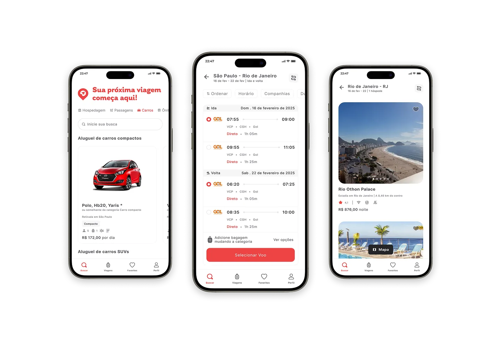
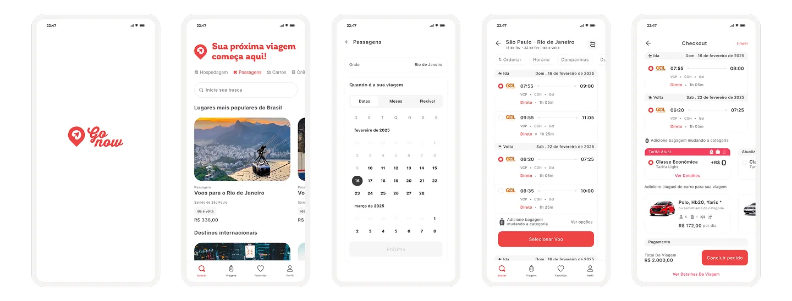
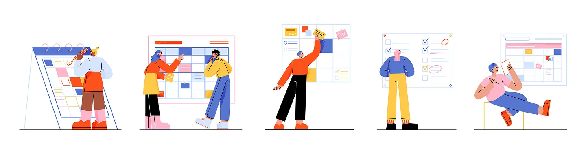
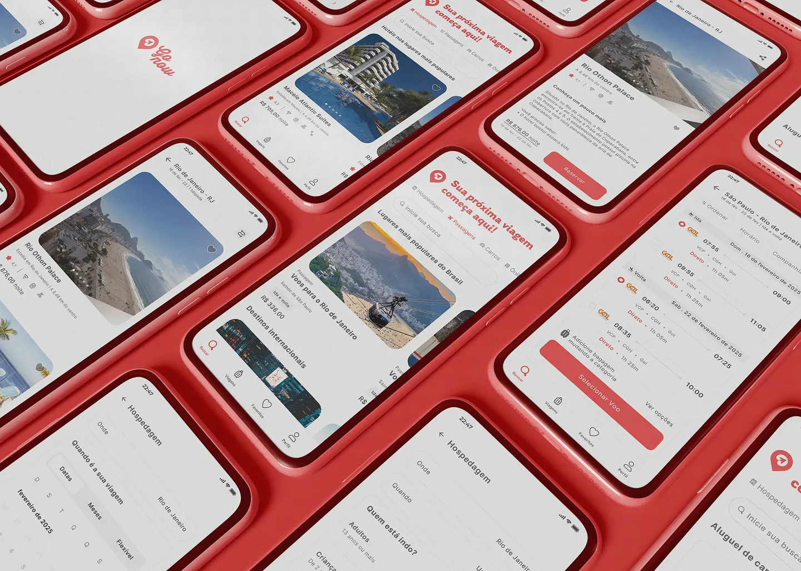
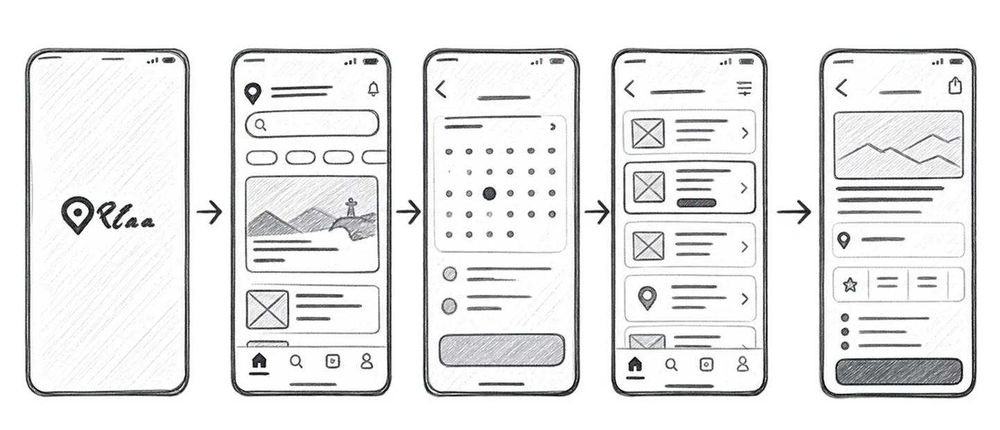
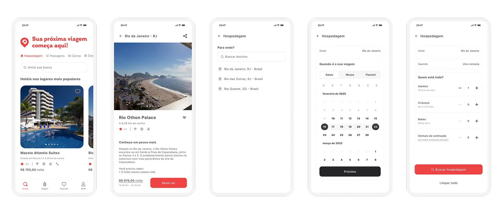
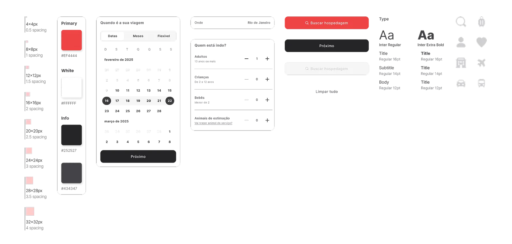
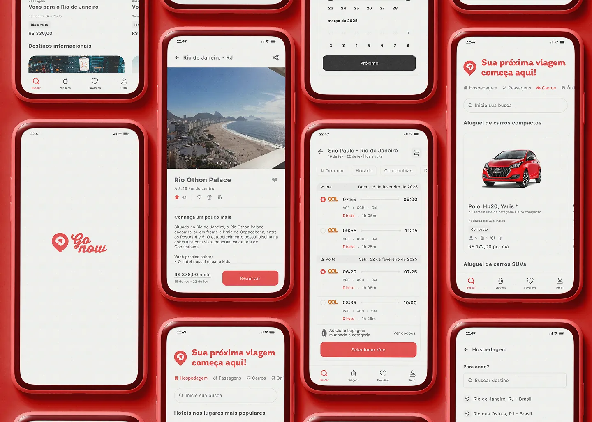

Go Now – Inovação e
Design Inteligente
A Nova Era das Travel Techs

Visão Geral
O Go Now é o case de um aplicativo de viagens desenvolvido para oferecer uma experiência intuitiva e moderna para os viajantes. Com uma abordagem minimalista e um forte foco em design, o app permite a reserva de hospedagens, passagens aéreas, aluguéis de carro e passagens de ônibus, tudo em um só lugar. O objetivo é simplificar o planejamento de viagens, tornando-o mais acessível e eficiente.
Programas Utilizados
Para a criação do projeto, utilizei as seguintes ferramentas:
- Figma: criação de wireframes, prototipagem e design system
- Miro: mapeamento de jornada do usuário e matriz CSD
- Adobe Illustrator: construção da identidade visual
- Adobe Photoshop: edição e manipulação de imagens
- Notion: documentação e organização do processo

Discovery
O processo de descoberta focou na experiência visual dos usuários, analisando como o design pode impactar a navegação e usabilidade. Foram realizadas pesquisas qualitativas e quantitativas para entender os principais desafios enfrentados pelos viajantes ao utilizar aplicativos concorrentes.
Os principais problemas identificados foram:
- Design poluído e excesso de informações: muitos usuários relataram dificuldades em encontrar as informações que realmente precisavam devido a interfaces carregadas e confusas.
- Falta de hierarquia visual: elementos importantes muitas vezes eram ofuscados por componentes menos relevantes, dificultando a tomada de decisão.
- Uso excessivo de cores e estilos inconsistentes: algumas plataformas analisadas utilizavam cores em excesso, prejudicando a experiência e tornando o design visualmente cansativo.
- Dificuldade na leitura de textos: tamanhos de fonte inadequados e baixo contraste dificultavam a legibilidade.
Com base nesses insights, o Go Now foi projetado para priorizar uma interface limpa, com elementos bem distribuídos, cores estratégicas para destaque e uma navegação intuitiva. A tipografia, espaçamentos e contraste foram refinados para garantir uma experiência mais fluida e agradável.
Benchmark
Foram analisadas diversas soluções do mercado, como Airbnb, Booking.com, Decolar e Kayak. O objetivo foi identificar boas práticas, pontos fracos e oportunidades de diferenciação.
Entre os aprendizados mais relevantes estavam a importância de um design clean, a disposição intuitiva das opções e o uso de microinterações para engajamento.

Matriz CSD
A Matriz CSD (Certezas, Suposições e Dúvidas) é uma ferramenta utilizada para estruturar o pensamento crítico durante a concepção do projeto. Ela permite organizar informações e destacar aspectos que precisam ser validados ao longo do desenvolvimento.
- Certezas: os usuários valorizam simplicidade e informações claras.
- Suposições: um design minimalista e com menos poluição visual melhora a experiência.
- Dúvidas: qual o impacto de funcionalidades extras na taxa de conversão?
Essa análise auxiliou na priorização de funcionalidades e refinamento da interface, garantindo que o design do Go Now fosse fundamentado em insights concretos.
Brand e Criação de Marca
A identidade visual do Go Now foi projetada para transmitir dinamismo e modernidade. O design minimalista é sustentado por uma paleta de cores bem definida:
- Branco predominante: sensação de limpeza e sofisticação.
- Coral Red (#EF4444): cor principal da marca, utilizada em destaques e chamadas para ação.
- Cinza Jumbo (#252527): contraste para textos, garantindo legibilidade, com variações de escala para hierarquia visual.

Possíveis Features
Algumas funcionalidades exploradas para diferenciar o Go Now incluem:
- Busca integrada: pesquisa unificada para encontrar hospedagens, voos e transporte em um só lugar.
- Recomendações personalizadas: sugestões com base no histórico de buscas e preferências.
- Alertas de preço: notificações para quedas de preço em voos e hospedagens.
Personas
Criei perfis de personas para direcionar melhor o design do produto:
- Ana, 29 anos, executiva: viaja frequentemente a trabalho, precisa de um processo rápido e eficiente.
- Carlos, 35 anos, mochileiro: prefere viagens econômicas e flexíveis, valoriza boas avaliações e preços acessíveis, busca opções com cancelamento gratuito.

Wireframes
Os wireframes são esboços estruturais da interface que auxiliam na organização da informação e na experiência do usuário antes da definição do design final. Esse processo foi essencial para:
- Criar um layout clean, com informações bem distribuídas.
- Garantir hierarquia visual eficiente, destacando os elementos principais.
- Testar diferentes abordagens de navegação e interação para otimizar o fluxo do usuário.

Style Guide
O Style Guide foi desenvolvido para garantir padronização e consistência em toda a interface do Go Now. Ele inclui:
- Tipografia: uso da fonte Inter para garantir legibilidade e modernidade.
- Paleta de cores: branco predominante, Coral Red para destaques (#EF4444) e Cinza Jumbo (#252527) para contraste.
- Componentes reutilizáveis: botões, inputs e alertas seguem um padrão visual único.
- Grid e espaçamentos: definição de margens e padding para manter harmonia entre os elementos.
- Ícones: estilo minimalista para reforçar a identidade visual da marca.
Esse sistema não apenas agiliza o desenvolvimento, mas também garante uma experiência coesa em todas as telas e futuras atualizações do produto.

Conclusão
O projeto Go Now proporcionou aprendizados valiosos, principalmente sobre a importância de pesquisas de usabilidade e testes iterativos. A abordagem minimalista mostrou-se eficaz para melhorar a experiência do usuário, destacando a relevância de um design limpo e bem estruturado no setor de travel tech.
A criação do Style Guide trouxe consistência visual e eficiência no desenvolvimento, reforçando o impacto de um design bem planejado para otimizar a navegação e usabilidade do aplicativo.
